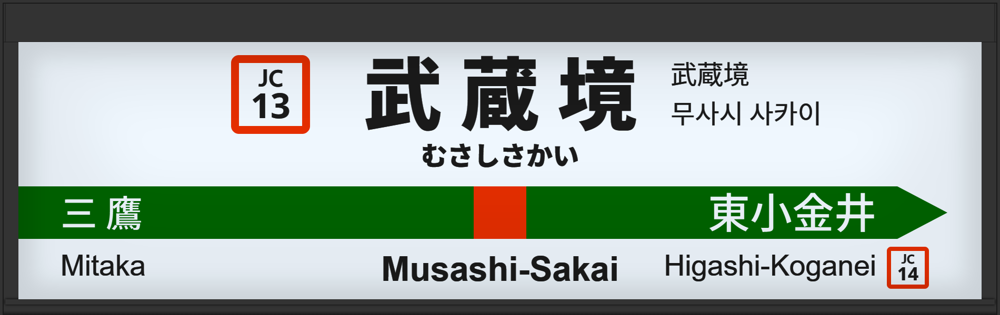

| ←三鷹 | ■ 中央線(快速) | 東小金井→ |
|---|
1995年に初期型ATOS放送導入された。
2025年6月には1番線の発車メロディが「Water Crown（エンドレスVer）」から「JR-SH2-3」へ、2番線は「クラルテ（5.5ターン）」から「JR-SH1-1」に変更された。
2006年頃に旧型に更新された。
2012年3月に常磐改良型に更新された。
2018年12月に宇都宮改良型に更新され、2番線の声優が津田英治氏から田中一永氏に交代。
2025年6月には1番線の発車メロディが「JR-SH2-3」から「JRE-IKST-016-1」へ、2番線は「JR-SH1-1」から「JRE-IKST-016-2」に変更された。
| 1 | ■ 中央線(快速) 東京方面 |
1番線次発予告 1番線接近放送 1番線発車メロディ（Water Crown エンドレスVer） |
放送は「快速 東京行」です。 向山佳衣子氏でした。 |
|---|---|---|---|
| 2 | ■ 中央線(快速) 大月方面 |
2番線次発予告 2番線接近放送 2番線発車メロディ（クラルテ 5.5ターン） |
放送は「快速 豊田行」です。 |